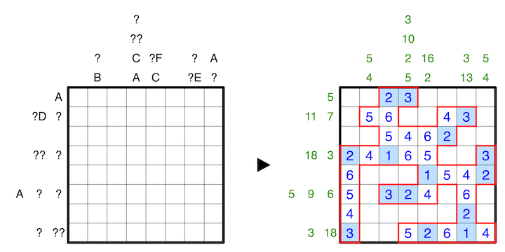

Clues outside the grid indicate the sums of connected groups of numbers in the respective row or column, in order, where empty cells serve as delimeters between groups.
The letters A to J replace the numbers from 0 to 9, and no two letters may replace the same number. A question mark can be any number from 0 to 9, and for all clues, none may have a leading zero.
A 1-6 example is provided:
